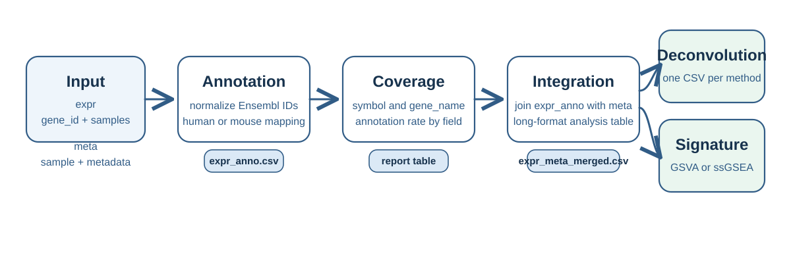

expranno is an R package for RNA-seq workflows that start from an expression matrix and sample metadata, then move through gene annotation, metadata integration, Deconvolution, and Signature analysis.
The package is designed for human and mouse expression matrices where:
- the first column of
exprisgene_id - the remaining columns of
exprare samples - the first column of
metaissample
expranno is built around four jobs:
- gene annotation from Ensembl IDs
- expression and metadata integration
- Deconvolution with
immunedeconv - Signature analysis with GSVA or ssGSEA
Rather than forcing a single annotation backend, expranno uses a coverage-first strategy that can combine:
biomaRt-
org.Hs.eg.dbororg.Mm.eg.db - optional
EnsDbpackages
This makes it possible to recover more symbols, names, and identifiers than a single-source annotation pass.

expranno does this in a simple analysis sequence:
- validate
exprandmeta - annotate genes and write
expr_anno.csv - merge expression and metadata into
expr_meta_merged.csv - run Deconvolution and save one table per method
- run Signature analysis and save one score table per method
Installation
Install from GitHub:
install.packages("pak")
pak::pak("dai540/expranno")Or:
install.packages("remotes")
remotes::install_github("dai540/expranno")Or install from a source tarball:
install.packages("path/to/expranno_2.00.tar.gz", repos = NULL, type = "source")Optional backends:
BiocManager::install(c(
"biomaRt",
"AnnotationDbi",
"org.Hs.eg.db",
"org.Mm.eg.db",
"ensembldb",
"EnsDb.Hsapiens.v86",
"EnsDb.Mmusculus.v79",
"immunedeconv",
"GSVA"
))Then load the package:
library(expranno)Citation
If you use expranno, cite the package as:
Dai (2026). expranno: Expression Annotation, Metadata Integration, Deconvolution, and Signature Analysis. R package. https://dai540.github.io/expranno/
You can also retrieve the citation from R:
citation("expranno")Workflow Overview
The main wrapper is run_expranno(). It orchestrates the whole pipeline from raw inputs to saved outputs.
result <- expranno::run_expranno(
expr = expr,
meta = meta,
species = "human",
annotation_engine = "hybrid",
output_dir = "results",
run_deconvolution = TRUE,
run_signature = TRUE,
geneset_file = "hallmark.gmt",
signature_method = "both"
)Input Contract
demo <- expranno::example_expranno_data()expr must be a gene-by-sample table.
head(demo$expr)| gene_id | sample_a | sample_b |
|---|---|---|
| ENSG00000141510.17 | 120 | 140 |
| ENSG00000146648.18 | 80 | 77 |
meta must be a sample metadata table.
head(demo$meta)| sample | group | batch |
|---|---|---|
| sample_a | case | b1 |
| sample_b | control | b1 |
Core Functions
expranno is intentionally split into one end-to-end wrapper and four stepwise building blocks.
Minimal Example
demo <- expranno::example_expranno_data()
res <- expranno::run_expranno(
expr = demo$expr,
meta = demo$meta,
species = "human",
annotation_engine = "none",
output_dir = tempdir(),
run_deconvolution = FALSE,
run_signature = FALSE
)Main Outputs
expranno is designed to write analysis-ready CSV files with stable names.
expr_anno.csvexpr_meta_merged.csvcell_deconv_<method>.csvsignature_gsva.csvsignature_ssgsea.csv
The high-level wrapper is run_expranno(), but the package also exposes smaller steps:
What To Inspect First
After a real run with annotation_engine = "hybrid", the first files and tables to inspect are:
expr_anno.csv- the annotation coverage report returned by
annotate_expr() expr_meta_merged.csv
The practical checklist is:
- confirm
symbolcoverage is high enough for downstream symbol-based tools - confirm
gene_namecoverage tracks withsymbol - confirm merged sample labels line up with the expected
metarows - use the merged table as the common input for Deconvolution and Signature analyses
Documentation
The package website includes:
- a getting started article
- human and mouse step-by-step case studies
- a theory and design article
- a function reference
Website: https://dai540.github.io/expranno/